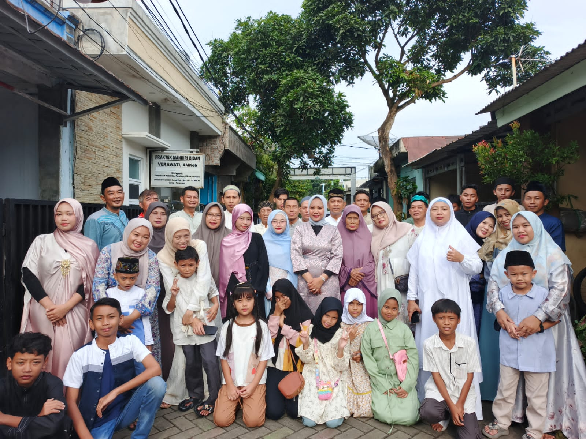
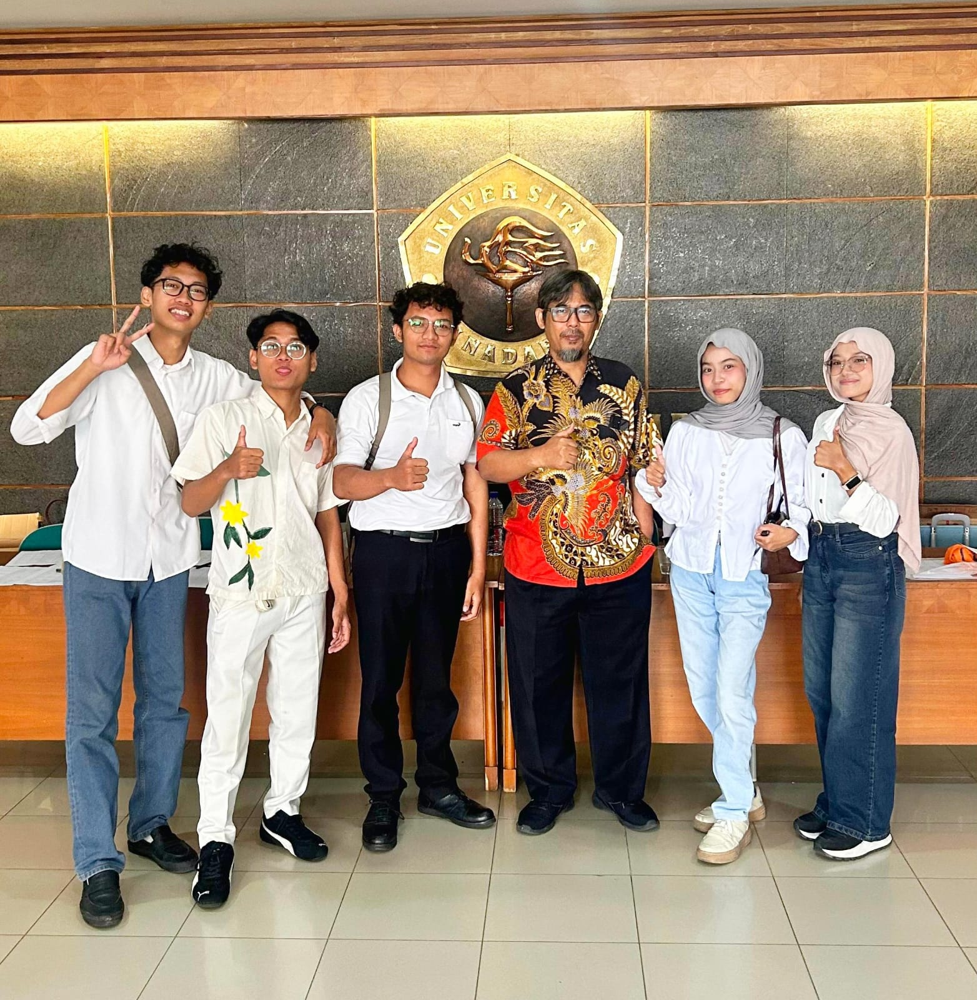

Perjalanan Hidup
My journey disini adalah perjalanan hidup saya dimulai dari perjalanan SMK, pengalaman momen liburan yang berkesan hingga memasuki dunia perkuliahan
🎧 Now Playing: Sunroof ୨ৎ

Bali
Desa Panglipuran
Desa wisata di Bali dengan tata ruang tradisional dan budaya yang lestari.

Yogyakarta
Arum Jeram
Arung jeram dengan pemandangan tebing hijau dan air jernih.

Bali
Tanah Lot
pura laut di Bali yang berdiri megah di atas batu karang tepi pantai.
🎧 Now Playing: You're on your own kid ୨ৎ

Perjalanan SMK
Kunjungan Industri
Melihat proses produksi acara televisi di Trans 7 secara langsung.

Perjalanan kuliah
Masa Pkkmb
Masa pengenalan lingkungan kampus bagi mahasiswa baru.

Perjalanan Kuliah
Kesan awal masuk kuliah
Campuran rasa gugup dan antusiasme di lingkungan baru.
🎼 now playing: Kembali pulang

Tahun Baru
Tahun baru bersama teman
Momen kebersamaan merayakan pergantian tahun.

Lebaran
Momen Lebaran
Hari kemenangan dan silaturahmi bersama keluarga.

Lomba
Kompetisi P2MW
Pengalaman berharga dalam mengusulkan produk inovatif.